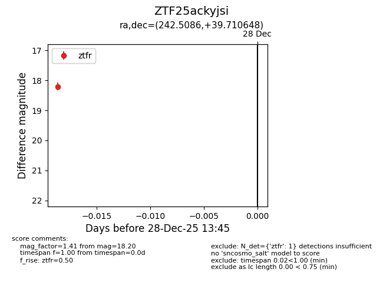
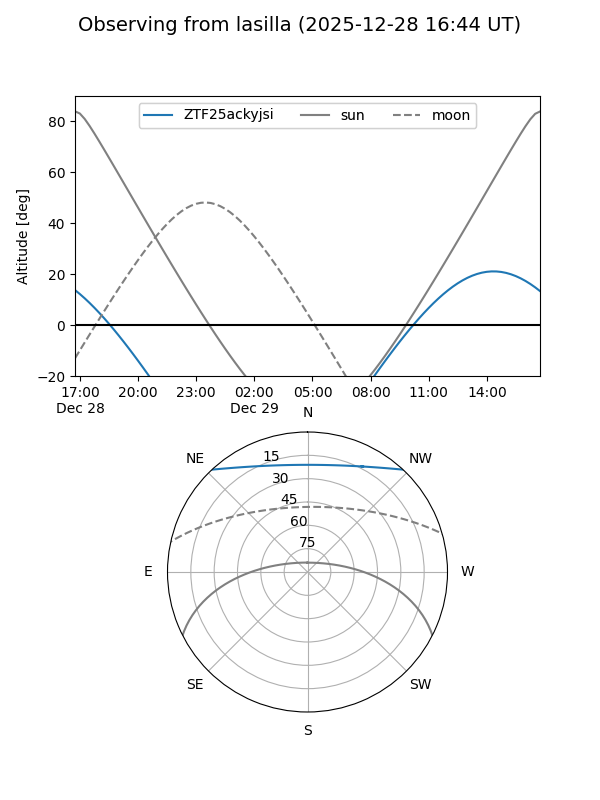
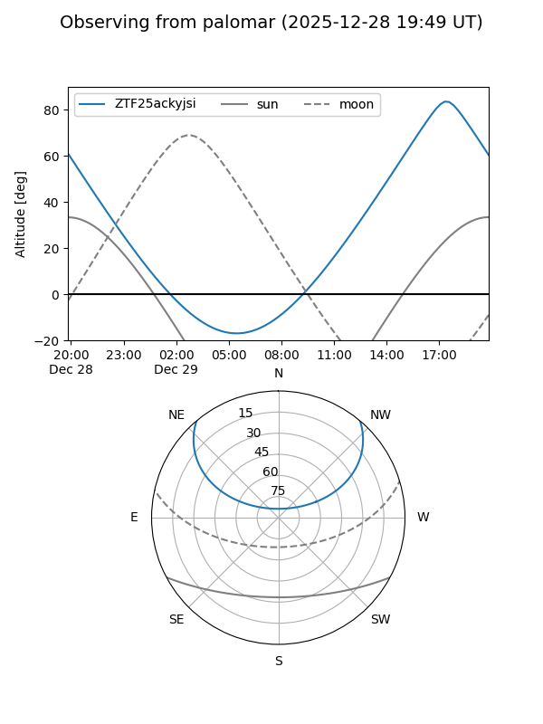

ZTF25ackyjsi
Target ZTF25ackyjsi at 2025-12-28 13:46
Aliases and brokers:
FINK: fink-portal.org/ZTF25ackyjsi
Lasair: lasair-ztf.lsst.ac.uk/objects/ZTF25ackyjsi
ALeRCE: alerce.online/object/ZTF25ackyjsi
alt names
ZTF25ackyjsi (ztf,fink_ztf)
Coordinates:
equatorial (ra, dec) = 242.5086,+39.71065
equatorial (HMS+DMS) = 16:10:02.07,+39:42:38.33
galactic (l, b) = (63.1532,+47.27524)
Flags:
Photometry:
last ztfr=18.20
1 ztfr detections
Lightcurve

Visibility


Additional plots